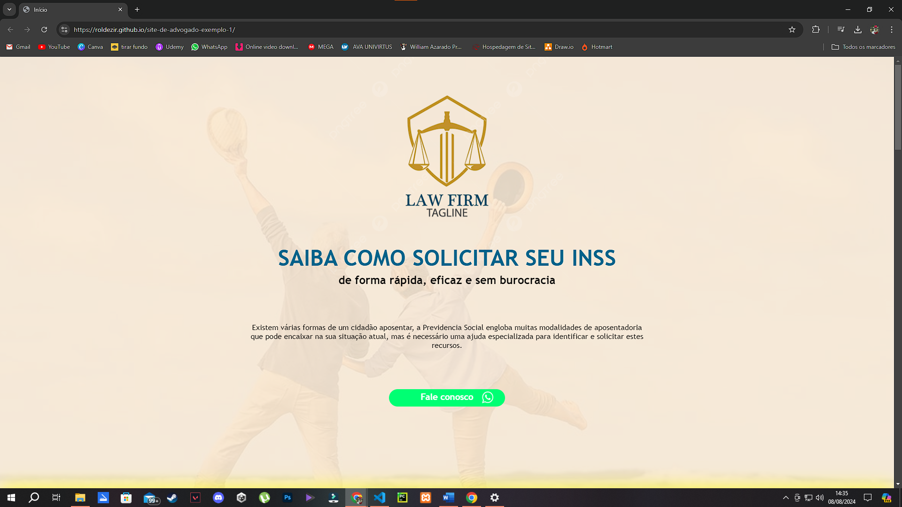

Portifólio
Site de Advogado
É um site que desenvolvi para uma advocacia fictícia, nesse site tem várias informações sobre essa advocacia. Todos os botões desse site tem animações de foco(quando passa o mouse por cima muda de tamanho e de cor) e quase todos os elementos têm animações de fade in(conforme o usuário vai rolando a página para baixo os elementos vão aparecendo separadamente). Link para acesso

What Is
É um jogo de quiz onde há 10 perguntas de conhecimentos gerais e o jogador pode escolher entre 4 opções, após responder as 10 questões vai aparecer a tela final onde ele descobre quantas questões acertou e quantas errou. Esse jogo foi inspirado no jogo GÊNIO QUIZ para computadores. Link para acesso

Level Man
É um jogo de plataforma onde há um cenário em que o jogador precisa chegar até o final, porém a tela vai andando em uma direção constantemente e caso o jogador encoste no limite superior ou inferior da tela ele morre, então o jogador precisa ir desviando dos obstáculos do cenário enquanto foje da movimentação da tela. Esse jogo foi inspirado na parte final da fase do fogo do jogo MEGAMEN X8 de PlayStation 2. Link para acesso